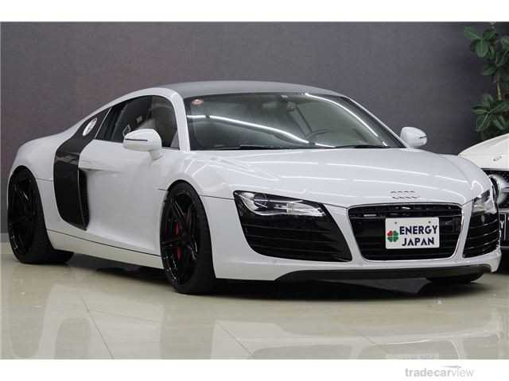

Audi es una empresa alemana fabricante de vehículos de alta gama, lujo y de competición con presencia global. Su sede central se encuentra en Ingolstadt, Baviera y forma parte desde 1965 del Grupo Volkswagen.

¿COMO ES AUDI ACTUALMENTE?
La compañía tiene su sede central en Ingolstadt, en el Estado federado de Baviera en Alemania. En la actualidad Audi sigue con su filosofía de «a la vanguardia de la técnica» e implanta todo su conocimiento adquirido en sus autos.
Los automóviles Audi se fabrican en las siguientes plantas:
Dos plantas de ensamblaje principales en Alemania:
Ingolstadt, Baviera, inaugurado por Auto Union en 1964, (A3, A4, A5, Q5)
Neckarsulm (Baden Württemberg), adquirido de NSU en 1969 (A6, A7, A8, R8 y todas las variantes RS)
Fuera de Alemania, Audi produce vehículos en:
Bruselas (Bélgica), (A1)
Győr (Hungría), (TT y algunas variantes A3)
Bratislava (Eslovaquia), compartida con Volkswagen, SEAT, Skoda y Porsche (Q7)
Changchun (China) desde 1995
Aurangabad (India) desde 2006
Martorell (España), compartida con SEAT y Audi (A1)
San Jose Chiapa, Puebla (México) Desde 2016 (Q5 y Q5 eléctrica)
Otras marcas que pertenecen al Grupo Volkswagen son Bentley (Reino Unido), Bugatti (Francia), SEAT (España), Lamborghini (Italia), Škoda (República Checa), Volkswagen (Alemania) y ahora han anunciado que van a crear una submarca llamada Concern especializada en superdeportivos que alcanzarán más de 400km/h.
Audi se presentó en la feria CeBIT por primera vez, del 6 al 10 de marzo de 2012 en Hanover, Alemania. Con el tema «Audi Connect», que vincula al auto, al conductor y a Internet, la marca presentó sus soluciones para aplicaciones móviles en la feria más grande del mundo en cuanto a tecnología de la información se refiere. Lo más destacado del stand de Audi fue el nuevo A3, cuya plataforma representa un avance significativo de ingeniería.